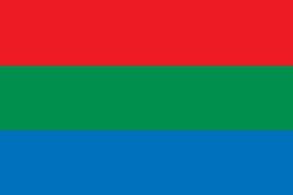
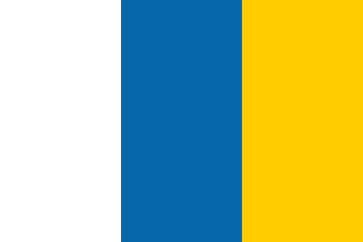

La Camella
Arona, S/C de Tenerife



Población Total: 4'256 habitantes.
Área Total: 8.63km²
Densidad Poblacional: 493.4 habitantes por km².
Puntos de Recogida: 7.
Habitantes por Punto de Recogida: 608 habitantes.
Cantidad de Residuos Generados Anualmente: No Disponible.
Tasa de Reciclaje: No Disponible.
Generación de Resiudos por Habitante: No Disponible.
Índice de Calidad del Aire: No Disponible.
Índice Sostenibilidad No Disponible.
Arona, S/C de Tenerife